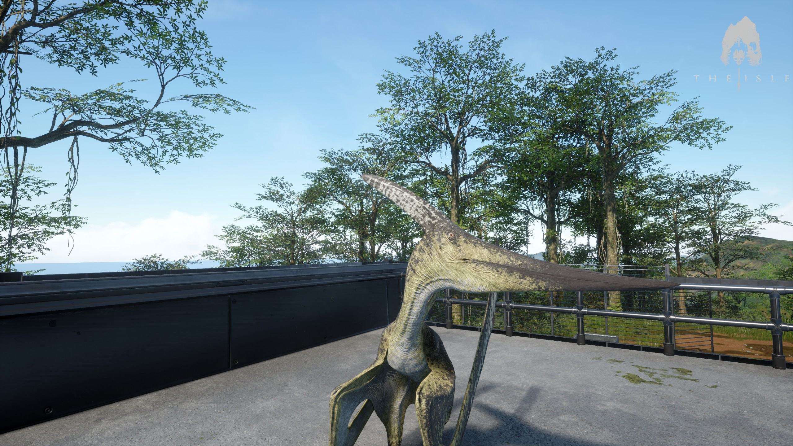

THE CARNIVORES
Pteranodon

Summary
The Pteranodon (pteron meaning "wing", anodon meaning "toothless") was the first flier added to
EVRIMA in
Update
#3. It's commonly referred to by the community as "Ptera" for short. Fun fact, Pteranodon was a
pterosaur, not a
dinosaur. The Pteranodon is a small and fragile animal, and doesn't hold its ground well in combat
against
anything larger than it. Use the skies to your advantage, and try not to get caught off-guard!
Growth Time
1 hour
Survival Needs
The Pteranodon is a piscivore, though can also consume meat. You'll rely on feeding from fresh water
sources for
fish, though may alternatively choose to hunt juveniles and small animals, if not, then scavenge.
Ripples found
on the water's surface are indicators for nearby schools of fish, and bodies can be located when
using
scent
(Hold Q), nearby bodies will be highlighted red.
Combat Control
Hold Spacebar while stationary - Stationary take off.
Used to launch yourself into the air to fly.
Hold Spacebar while sprinting - Running take off. Costs less stamina than the stationary take
off but takes longer to get into the air.
Hold Spacebar while flying - Fly upwards.
Hold Ctrl while flying - Fly downwards.
Hold Shift while flying - Fly faster at an increased stamina cost.
Hold Z while flying - Air break. Used to slow yourself down in order to land safely.
Hold RMB while flying close to a water source - Skim the water. Perform this action above ripples in
water
sources to catch fish. Release RMB when prompted to catch a schooling fish.
The Pteranodon cannot swallow food while flying.
Utahraptor

Summary
The Utahraptor (meaning “utah’s predator”) was the first carnivore added to the EVRIMA update and was
used to pave
the future of the game. It’s commonly referred to by the community as “Utah” for short, with occasional
variations
in its spelling.
Growth Times
1 Hour 25 Minutes
Survival Needs
The Utahraptor is a carnivore. You’ll be relying on your wits to hunt other animals, scavenge for
bodies, or even
consider cannibalism. Bodies can be located when using scent (Hold Q), nearby bodies will be highlighted
red.
Combat control
Even the most skillful start somewhere, and you’ll be competing against these players so you better get
acquainted
with your controls. Find a technique that suits you in combat. Some attacks will drain a high amount of
stamina with
a high damage output, so use them wisely.
LMB
Front Claw / Bite
Hold RMB
Launch / Pounce
Release RMB to cancel the pounce
ALT + LMB
Front Claw / Bite
Based on camera, Area of Effect (AOE) attack
Your pounce attack is one of your most deadly, risky and rewarding attacks that you can use against your
prey.
Successfully pouncing smaller animals pins them to the ground and mauls until you let go. You can only
latch onto
larger animals, but be warned: they can buck, draining your stamina.
Carnotaurus

Summary
Carnotaurus (meaning "meat-eating bull") was the second carnivore added to the game alongside the
Stegosaurus
and
Hypsilophodon.
Growth Time
5 Hours 30 Minutes
Survival Needs
The Carnotaurus is a carnivore. You’ll be relying on your wits to hunt other animals, scavenge for
bodies, or
even
consider cannibalism. Bodies can be located when using scent (Hold Q), with nearby bodies being
highlighted red.
Combat Controls
Carnotaurus, though somewhat fragile, is the fastest animal currently added to the game. Don't take his
fragile
build for granted, for his ability to push over and stun animals smaller than it is something to fear.
Use this
charge to down your enemies and keep them stunned to the ground for a period of time.
LMB
Bite
Hold RMB
Charge
Let go of RMB to cancel Charge
+
Deinosuchus

Summary
Deinosuchus is an extinct genus of crocodilian related to the modern alligator that lived 82 to 73
million years ago
(Ma), during the late Cretaceous period.
Growth Time
5 Hours 30 minutes
Survival Needs
The Deinosuchus is a carnivore. You are very slow and vulnerable on land but formidable in water. Your
play-style
revolves around ambushing dinosaurs using stealth to hide below the waters surface and pull your pray to
their
deaths. (Hold Q), nearby bodies will be highlighted red.
Combat Control
Spacebar in water - Swim upwards.
Ctrl in water - Swim downwards.
Hold RMB when water-walking (walking on the bed of water sources) - Big lunge. Used to grab targets to
drown them.
Only effective on targets half your weight or less, otherwise causes you to be staggered.
Hold RMB on land - Small lunge. As above, but doesn't launch as far and costs more stamina.
Tap RMB when swimming - Water boost. Used to rapidly launch yourself to your fastest swimming speed.
Passive - Water Sense. Used for detecting nearby movement in water.
Hold Q while underwater - Enhanced Water Sense. Used to detect movement in water at a further
range. The longer the key is held, the further you can sense. In order to use regular scent you must be
above the
surface of water.
THE HERBIVORES
Hypsilophodon

Summary
Hypsilophodon (meaning "Hypsilophus-tooth") is the smallest playable herbivore in-game at this time. The
small stature of this animal makes dense jungles and fields with tall grass the prime environment for
survival. The community will typically shorten the name to "Hypsi", or even "Hypsie".
Growth Time
No Growth Time (Spawns in as Adult)
Survival Needs
Hypsilophodon is a herbivore. You’ll be relying on edible plants to survive. Grazing merely helps stave
off
starvation, it’s not a reliable food source. Edible foliage, or “food bushes”, can be found in various
places on the map. Use your scent (Hold Q) to locate nearby resources.
Combat Controls
Hypsilophodon is a speedy critter that sports an impressive jump, but most noteable of all is its
ability to
blind predators by spitting out the acidic contents of its stomach onto their face, giving it a chance
for a
quick escape.
LMB
Bite
Hold RMB
Spit
Let go to Spit
Press R to cancel Spit
Dryosaurus

Summary
Dryosaurus (meaning "tree lizard") was the third playable animal added to the EVRIMA update along with
its
AI counterpart. You will see Dryosaurus often shortened to "Dryo" by the majority of the community.
Growth thagomizers
30 Minutes
Survival Needs
The Dryosaurus is a herbivore. You’ll be relying on edible plants to survive. Grazing merely helps
stave
off starvation, it’s not a reliable food source. Edible foliage, or “food bushes”, can be found in
various places on the map. Use your scent (Hold Q) to locate nearby resources.
Combat Controls
The Dryosaurus is a flighty herbivore and easy prey for many larger animals. Use your quick wits and
skillful dodges to your best ability to swiftly escape your predators.
LMB
Bite
RMB
Dodge
Relative to camera direction
Tenontosaurus

Summary
The Tenontosaurus (meaning “sinew-lizard”) was the first herbivore added to the EVRIMA update and was
used
to pave the future of the game. It's commonly referred to by the community as "Tenonto" or "Teno" for
short,
with some slight variations in spelling.
Growth Times
1 Hour 45 minutes
Survival Needs
The Tenontosaurus is a herbivore. You’ll be relying on edible plants to survive. Grazing merely helps
stave
off starvation, it’s not a reliable food source. Edible foliage, or “food bushes”, can be found in
various
places on the map. Use your scent (Hold Q) to locate nearby resources.
Combat Controls
The world is a scary place and not without hungry predators, so you better get acquainted with your
controls! Find a technique that suits you to combat against your attackers. Some attacks deal heavy
blows,
but will drain your stamina. It's wise not to overuse them, only use them when you are confident you
will
hit your target.
LMB
Front Kick / Punch
LMB (While moving)
Bite
RMB
Backwards Kick
Can be used while moving
Left Alt + RMB
Tail Slam
Stegosaurus

Stegosaurus
Stegosaurus (meaning "roof-lizard") is the largest playable herbivore in-game. It sports an iconic
silhouette, with large back-plates along its spine, and thagomizers at the end of its tail. It's name is
typically shortened to "Stego" by the community.
Growth Time
5 Hours
Survival Needs
Stegosaurus is a herbivore. You’ll be relying on edible plants to survive. Grazing merely helps stave
off
starvation, it’s not a reliable food source. Edible foliage, or “food bushes”, can be found in various
places on the map. Use your scent (Hold Q) to locate nearby resources.
Combat Controls
Stegosaurus is a very cumbersome animal that takes things at its own pace. It's best played as a
defensive
nomad rather than something offensive given the slow sprint. With a powerful and deadly swing, few
animals
will consider fighting this graceful beast.
LMB
Bite
RMB
Tail Swing